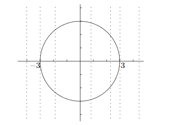
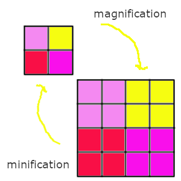
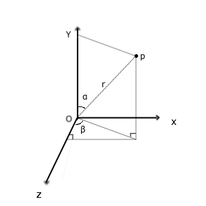
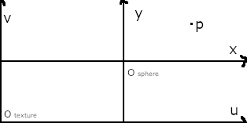
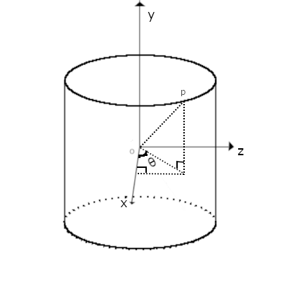
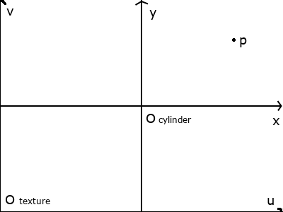
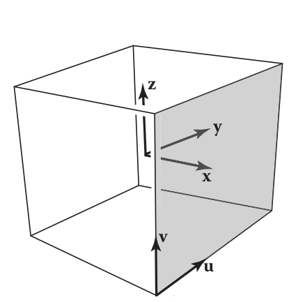

图形学-纹理映射
在 3D 建模中经常会听到纹理映射(texture mapping)这个词,就是把一张图片映射到物体表面上,通俗点说就是贴图(动词),
也就是把图片贴在物体上,这张图片储存了一些用于物体表面的细节,这些细节就是我们说的物体纹理.
之所以会有这种技术是因为现实中的物体表面细节十分复杂,比如墙壁的砖头纹理,每块砖头的表面凹凸程度不一样,
这种情况通过建模(顶点描绘)实现是一件很费力的事情,并且还要考虑变换的问题;
所以一般是先建一个墙形状的物体,然后通过纹理映射让开发者把现实墙壁照片"贴"到物体模型上,
这样建模看起来就像是现实的墙了,并且不需要考虑变换问题,因为 图片本身就是像素集合,也就是在 Fragment Shader 中进行处理的.
这种图片有很多种叫法: 纹理贴图(texture map,这里的贴图是名词), 纹理图片(texture image)或者就纹理(texture),下面统一采用用纹理这个叫法.
此外,纹理映射还能用来实现阴影,反射光,自发光以及不透明度等等效果,所要实现的效果可以作为一种纹理类别,比如这文章上就提到有个网站就对纹理进行分类.
开篇"废话"
对于这部分没有兴趣的可以直接跳过.
这篇笔记和前面的几何变换,坐标变换以及光照计算是同一个系列,实际上还有一篇线性代数的自学笔记的,它为我学习前面三个东西提供了基础,
之后我会为这几篇文章写个独立页面的,之所以要写这个系列是因为工作上需要,还有我自身对图形学这块有兴趣,
所以这个系列的内容是围绕 OpenGL 来写的,但是我也不忘学习背后的数学原理, OpenGL 和图形学只是看着相似,但不能画等号.
这篇笔记是这个系列的最后一篇,学完这个在工作上弄些简单 3D 场景基本上没什么问题的了(不对,你还要学建模),
但是对于图形学来说还是不够全面的,所以为了更加系统地学习,在完结这个系列后会开一个新系列,旧系列就是新系列的前导,我最初就是这么打算的.
新系列基本上就是数学配套实际代码的风格了,这是为了对(前端)开发人员友好,我会也尽可能得把它们写得简单易懂.
这个篇笔记是阅读 Fundamentals Of Computer Graphics 4th 的 Texture Mapping 后的总结,这本书的风格是数学结合伪代码的形式,
比较贴近新系列的风格.
关于数学我说一下我自己的感受,老实说本人的数学并不算好,在学习几何变换和坐标变换之前就补了一个月的线性代数了,
在实际学变换的时候还再要补充欧几里空间和仿射空间的知识.到现在为止我也只是敢说掌握了学习图形学所需线性代数概念.
如果你问我用一个月时间学习线性代数值不值得,我可以肯定的告诉你:值得.一是在学习图形学的路上数学,特别是线性代数是不可避免的,
二是线性代数可以用在很多其它方向,比如深度学习.
数学不好的人其实也不需要灰心,我理解这些人灰心的原因: 它很有用但又难以接触,所以就有了不会数学对编程没有影响这种论调.
灰心的人大多数都是在上学的时候被成绩打击的体无完肤,对于大多数新手而言一开始不行就很难有后面的成长了.
学校没有很好的教我们如何去学数学,只是教如何应付考试而已,相信大部分人都不因为想成为数学家而学数学的,
很多人都只是想用于实际,数学很庞大,并不是所有东西都能用在实际上,所以在实际中掌握需要的数学概念就可以了.
我还记得以前上学时就有教师抽查学生背概念,因此很多学生误以为这就是数学的学习方式,哪怕在工作中我也遇到不少同事还是这么认为!
掌握概念 是指 理解概念是怎么来,意味着什么,能做什么,不是 记忆对概念定义以及其证明过程,在这个过程里面可以通过各种手段去帮助理解,比如:
找一本更适合自己的书籍,每本书的面向人群是不一样的,很多问别人推荐书的人或者给别人推荐书的人都没有考虑过这一点:你的水平是否适合阅读这本书,
书的水平太高会妨碍你学习下去,因此不要看不起那些面向新手的书,能够带领你学下去才是最重要的,
知识面不够可以通过别的书补全,慢慢的水平就提高了,就有能力阅读水平更高的书,逐渐成为另外一个群体的人;
把概念和其它事物进行类比再进行理解,这种转换角度的理解方式是我最常用的,经常有不少新的发现;
结合别人的文章校对自己的理解;
还可以利用计算机计算来进行验证,所以 学习编程 有利于 学习数学 不是没有道理的.
其实大部分人害怕数学只是因为看不懂而已,把数学类比成一门外语,你会发现它和英语的地位在很多人眼中差不多,
数学概念 相当于 单词, 掌握 单词 基本就能达到看懂句子的第一层了,也不需要掌握完所有单词,
只是不能通过记忆掌握数学的"单词",要通过理解,而数学的"语法"就是逻辑,这个没什么好讲的.
不过句子表面和说出句子的人想要表达的可能不一样,比如反嘲,看懂句子的第二层就是理解人想要表达的真正含义,
和自然语言的差别在于: 数学真正晦涩难懂的地方就只有编写推理或证明过程的作者对非必要描述的省略,因为描述之间有着很强的因果关系,
这种"因"或"果"的缺失对读者造成了很强的跳跃感,一时间跟不上作者的思路,对读者本身的阅读经验有不低的要求,
唯一解决方法就只有多阅读多去理解,万幸的是,作为开发人员你可以完全不用管这个.
不过我个人对阅读证明还是有一定的兴趣的,自学材料也准备好了,等以后有空我会针对它单独写一篇笔记.
这是我本人对数学的感觉,比喻不一定恰当,不过我相信大部分人都会有这种感觉,如果不信的话可以看看这位大佬的文章.
一些需要用到的数学概念
这里需要用到的知识大多数来自于微积分(calculus),只要不是为了发展微积分而学习,那么就不要觉得微积分很难,
它主要研究关于连续体(continuum)的,包括变化率,曲线面积和立体的体积,要继续走下去就只能把微积分也学了.
短时间补充知识的话推荐
它针对的是一元微积分(single-variable calculus).
短时间补充知识的话推荐 Calculus Early Transcendentals by James Stewart 这本书覆盖了一元以及多元函数的微积分,
日常生活中很多问题都是类似多元函数: 一个事物受多个因素影响,因此掌握多元微积分可以帮你分析生活中的问题.
如果这本书对于你来说上手有点难度,那么我推荐先 The Calculus Lifesaver: All the Tools You Need to Excel at Calculus 上手,
这本书主要是争对一元函数的,一旦适应了就可以回到第一本书从多元微分部分开始读.
这本书的风格是故意用"废话"(wordy)去描述一个问题,通过"废话"是用来读者交谈,从而诱导读者对问题进行思考,让读者对要学习的概念有个直观上的认知,
这个道理其实同样适用在阅读证明(proofs)上.这种 通过实例对于概念建立直觉(intuition) 的学习方式是一门重要的学习技能.
并且没有练习题,因此你可以不用纠结做题直接一读到底.
当然这里不是对这两本书写笔记的,主要是针对 Fundamentals Of Computer Graphics 4th 的 Texture Mapping 用到的概念进行总结,
如果总结不到位的话就去看上面推荐的两本书.
多元函数(multivariable functions)
所谓 n 元函数就是一个函数的值由 n 个(自)变量决定,比如:
\(f(x)\) 这种是一元函数;
\(f(x_{1}, x_{2})\) 是二元函数;
\(f(x_{1}, x_{2}, ..., x_{n})\) 是 n 元函数,只要 \(n \geq 2\) 的函数就是多元函数.
隐函数(Implicit function)
在一些关系(relation)中,如果能够看到一种关系: 一个变量的值完全由其它变量决定的关系,
那个这种关系就叫做显函数(Explicit function),比如下面这些方程,
\(y = 3x + 4\),
\(y = 2^{x} + x\);
\(y = 3x_{1} + 4x_{2}\);
这些例子都由一个共同点: \(y\) 完全单独写在等式的一边,并且等式的另外一边完全没有它的身影,
也就是 $y = $ 这样, \(y\) 完全由 \(x\) 决定,这完全符合上面说到的 一个变量完全由其它变量决定,
简单来说就是一眼就看出 \(y\) 与 \(x\) 的关系,所以才叫显函数.
在高中的时候,一般来说函数都是一元函数 \(y = f(x)\) 这种形式的,它们的图像是都是一条线.
其实高中的时候也有学过二元函数: \(f(x, y) = r^{2} = (x - a)^{2} + (y - b)^{2}\),
没错就是圆形方程,只是把它的函数值固定为某个值然后还是按照 \(x\) 和 \(y\) 的关系来研究了,
比如一个圆的圆心位于原点 \((0, 0)\),半径为3,那么这个圆的方程为 \(x^{2} + y^{2} = 9\),
不过圆形方程不符合一元函数的定义,它不通过垂直线测试(vertical line test): 关于一个 \(x\) 时,函数的值 \(y\) 不能有两个,

不过把其中一个 \(y\) 值去掉后就可以得到一个函数了,也就是把圆切一半,

(当然这切的方式比较复杂,)得到的这个函数 \(y = f(x)\) 叫做隐函数(Implicit function),
叫隐函数是因为不能从关系(这里是圆形方程)中一眼看出 \(y\) 和 \(x\) 的关系,
这个圆形方程还有另外一个隐函数,也就是被切掉的一半,总得来说,该方程存在两个隐函数:
\(f(x) = y = \sqrt{9 - x^{2}}\) 以及 \(f(x) = y = -\sqrt{9 - x^{2}}\).
多元函数也可能存在任意个数的隐函数,存在 0 个隐函数就说明自变量之间不存在任何关系.
像这种 \(y - 3x = 4\) 关系也可以说是存在隐函数: \(y = 3x + 4\),这个就是最开始的那个显函数例子.
所以说显函数和隐函数就是相对于关系而言的概念,有些关系可以在 显函数 和 存在隐函数 的两种形态中变换,也有一些是完全不能变成显函数,
比如 \(x^{2} + 3x + 4y^{3} + 3y = 4\) 就没有办法完全把 \(y\) 或者 \(x\) 单独写在某一变来得到一个函数,那么这种关系就不存在隐函数.
参数方程组(Parametric equations)
通常我们接触到的函数都是 \(y = f(x)\) 这样形式,可以看出 \(x\) 和 \(y\) 有直接关联,也正是因为它们存在直接关系才能有这个函数.
不过有时变量之间是没有直接关系的,它们之间缺存在某种间接关系,也能够写成一个新的函数.
其中一个例子就是 参数曲线,它是一个方程组: \(\left[\begin{array}{c}x \\ y\end{array}\right] = \left[\begin{array}{c}g(t) \\ h(t)\end{array}\right]\), 其中 \(g\) 和 \(t\) 是连续的,
这里 \(x\) 和 \(y\) 本身是没有直接关系的,但分别和 \(t\) 存在关系,当 \(t\) 发生连续的变化时, \(x\) 和 \(y\) 也分别发生连续的变化,
把 \((x, y)\) 的组合看作一个平面图的坐标,那么最终图像就是一条平滑连续的曲线,
这个方程组实际上可以改写成一个关于 \(t\) 的函数: \(P = f(t)\), \(f\) 是一个向量值函数, 其中 \(f: \mathbb{R} \mapsto \mathbb{R}^{2}\),
它接受 与各个变量存在关系的第三方变量 作为参数(parameter),这里的第三方变量是 \(t\),
保险起见还是声明一下, 方程组不是函数.
还有一个例子就是 参数曲面,它的方程组是: \(\left[\begin{array}{c}x \\ y \\ z\end{array}\right] = \left[\begin{array}{c}f(u, v) \\ g(u, v) \\ h(u, v)\end{array}\right]\),
其中 \(f\), \(g\) 和 \(h\) 是连续的, \(x\), \(y\) 和 \(z\) 分别和 \((u, v)\) 存在关系,当 \(u\) 和 \(v\) 发生连续变化时, \(x\), \(y\) 和 \(z\) 也分别发生连续的变化,
把 \((x, y, z)\) 的组合看作一个三维空间的坐标,那么最终结果是一个连续平滑的曲面,
可以改写成关于 \(u\) 和 \(v\) 的二元函数: \(P = f(u, v)\), 其中 \(f: \mathbb{R}^{2} \mapsto \mathbb{R}^{3}\).
微分以及导数(Differentiability And The Derivative)
假设有函数 \(y = f(x) = x^{2}\), 随着 \(x\) 的变化, \(y\) 也会发生变化,
比如 \(x\) 产生了变化量 \(\triangle x\), \(y\) 随之产生了变化量 \(\triangle y\),
如果 \(\triangle x\) 和 \(\triangle y\) 非常非常微小,那么它们就分别是 \(x\) 和 \(y\) 的 微分 (differential),标记为 \(dx\) 和 \(dy\),
而 \(dy\) 表示函数的 微分.
有些说明只给出了 \(f(x) = x^{2}\),没有给出等于 \(y\), \(z\) 之类的变量,那么可以会统一采用 \(d\) 表示函数的 微分,
这和上面 \(dy\) 是一个意思.
对于这个 微小 的定义,曾经对微分产生过两种定义: 古典微分 和 极限微分.
古典微分 是定义微分为无穷小的变化.但是无穷小在当时是一个不严谨的概念,
所以为了移除这个不靠谱的说法,后面用 极限 来对微分重新进行定义(描述),也就是现在的 极限微分.
与 古典微分 直接 等于 无穷小量的变化不同, 极限微分 可以理解是 约等于 变化量,也就是逼近某一个值,
(极限的概念(limit)请自行阅读书的第三章.)
来结合实际例子要理解一下:
有辆车在路上行驶,在第 \(t_{1}\) 秒时处于位置 \(s_{1}\) 上,在 \(t_{2} = t_{1} + t\) 秒时处于位置 \(s_{2} = s_{1} + s\) 上,
可以得到平均速度 \(v = \frac{s}{t}\), 用函数表示 \(s\) 和 \(t\) 的关系: \(s = f(t) = vt\).
移动中速度随时都可能发生改变,如何得出某一个瞬间的速度呢?
所谓的一瞬间就是一个时间点,一个点是线段的一部分,那么这个点该占据线段的多少呢?
按照 古典微分 的说法,这个时间点就是一无穷小的时间段,但是无穷小是一个变量,无法确定它的值,
只要 \(t\) 大于 0(时间不能为负),它可以是任何值: 10, 0.1, 0.001, 0.0001, 这样话上面的平均速度就是我们要找的瞬时速度了,
所以 \(ds = s\), \(dt = t\).
极限微分 不需要知道无穷小是多少,只需要让 \(t\) 无限逼近 0 就行了,也就是说 \(t\) 不等于或者说无法等于 \(dt\), \(s\) 和 \(ds\) 同理,
所以 \(ds \approx s\), \(dt \approx t\),那么瞬时速度就是这样的: \({v = \lim\limits_{t \to 0}f(t)} = \lim\limits_{t \to 0}\frac{s}{t}\).
这就是两者直觉上的差别,再来翻译一下两者的表达,
古典微分: 当时间变化 \(t\) 等于无穷小时,车辆移动了 \(s\),那么车在个时间的瞬时速度为 \(v = \frac{s}{t}\);
极限微分: 在时间变化 \(t\) 逼近 0 时,车辆移动了 \(s\),那么车在这个时间的瞬时速度为 \({v = \lim\limits_{t \to 0}\frac{s}{t}}\).
仔细观察的话你会发现 \(v\) 就是微分的比率,这叫做 导数 (derivative),不过老问题,导数也分古典和极限定义:
在 古典微分 中,导数就是微分之商 \(f'(t) = v = \frac{ds}{dt} = \frac{s}{t}\),简称微商;
在 极限微分 中,导数就是在点 \(t\) 上的变化率 \(f'(t) = v = \frac{ds}{dt} = {\lim\limits_{t \to 0}\frac{s}{t}}\).
\(dt\) 作为"分母"就是告诉我们是对 \(s\) 关于 \(t\) 进行求导(英文是: differentiate \(s\) with respect to \(t\)),
在 极限微分 中, \(\frac{d}{dx}\) 这种形式的"分数"是一个原子运算符,原子就是不可再分的意思,也就是说它并非是一个分数.
总体来看, 古典微分 和 极限微分 其实挺接近的,也就差了一个微分,具体差别可以看知乎上这个回答.
如果这里还不够通俗易懂的话可以看看 Maths Is Fun 上的导数介绍,它还总结了导数的计算公式以及计算方法.
一旦了解导数的意义以及计算方法后,可以开始尝试用它解决问题了.
生活中大多数问题都是多元函数,比如一个很简单的游戏伤害公式 \(dmg = f(atk, power, def)\),结果受 进攻方的攻击力, 进攻方的招式威力 以及 防御方的防御力 3个变量影响.
假设你想分析哪个变量的变化对结果影响最大,那么偏向导数(partial derivatives)就是解决这个问题的工具了.
所谓偏导数就是在保持其它变量不变(把它们设为常数,比如0),只让一个变量发生改变的情况下,对这个变量求得的导数;
使用这种方法轮流对所有变量进行计算,最后对所有结果进行对比,绝对值最大的导数所对应的变量就是影响最大的.
关于偏向导数的说明可以看这里.
比如你想知道一个"圆形"是否真的圆,可以利用方向导数(directional derivatives)看看每个点上在某方向的变化率是否一样,关于方向导数可以看这里.
如果是想系统的学习微积分来解决生活中的问题,那么就去看上面推荐的书的第一本.
纹理以及纹理过滤
关于纹理的介绍, Direct3D 的一篇文档写得很棒: https://docs.microsoft.com/en-us/windows/uwp/graphics-concepts/introduction-to-textures.
OpenGL 基本也是这样的,不过 OpenGL 的纹理坐标系(texture coordinate system)原点和 Direct3D 不一样.
OpenGL 的纹理分很多种: 1D, 2D 和 3D,因此本文对纹理映射过程学习都是针对2D纹理(2D texture)的,也就是我们最熟悉的图片.
2D纹理映射就是把图片贴到一个物体上,比如把尺寸 \(w \times h\) 海报贴到尺寸 \(x \times y\) 的墙壁上,并且海报对齐墙壁的 \(x\) 和 \(y\) 轴,有三种可能的情况以及要求:
- 墙壁的尺寸比海报大或者一样大: \(\begin{equation} \left\{ \begin{aligned} w \leq x \\ h \leq y \end{aligned} \right. \end{equation}\), 并且想按照原尺寸把海报贴到墙壁上;
- 在保持墙壁的尺寸比海报大或者一样大的情况下: \(\begin{equation} \left\{ \begin{aligned} w \leq x \\ h \leq y \end{aligned} \right. \end{equation}\), 对海报放大(magnification)并且贴到墙壁上;
- 墙壁的尺寸比海报小: \(\begin{equation} \left\{ \begin{aligned} w > x \\ h > y \end{aligned} \right. \end{equation}\), 要把海报缩小(minification)到 \(\begin{equation} \left\{ \begin{aligned} w \leq x \\ h \leq y \end{aligned} \right. \end{equation}\) 贴到墙上.
在现实中改变海报的尺寸会比较麻烦,但是在计算机中就很方便,我们把墙壁看作是一个 \(x \times y\) 像素的显示屏,海报就是一张 \(w \times h\) 的图片,
把图片显示在屏幕上就是把图片的像素按照顺序逐个输出到屏幕上.
在情况1中,图片的1个像素内容只需要占用显示屏的1个物理像素;
在情况2中,如果图片尺寸放大为 \(2w \times 2h\),那么图片原本1个像素的内容就需要占用显示屏的 4 个物理像素;
在情况3中,如果图片尺寸缩小为 \(\frac{w}{2} \times \frac{h}{2}\),那么图片原本4个像素的内容就只需要占用显示屏的1个物理像素.

说了这么多,其实我是想说要区分图片 原本的像素 和 显示出来的像素.
图片的像素量反映了图片包含的信息量, 图片 原本的像素量 反映图片包含的 真正信息量, 能够显示出多少真正信息量 取决于 能够用多少个物理像素来显示.
在情况1和2中,显示出来的真正信息量都是没变的;
情况1中 真正信息量 和 显示出来的信息量 的比是 1,也就是按照纹理图片的 原本尺寸以及原有信息 显示;
但是情况2中, 真正信息量 和 显示出来的信息量 (也就是放大后的图片像素量) 之间的比例变低了,图片原本的像素衔接地方被放大了,就出现了锯齿(jaggies).
Figure 4: \(75px \times 75px\) GIMP logo (情况1)

Figure 5: \(150px \times 150px\) GIMP logo (情况2)
而在情况3中, 显示出来的信息量 变少了,你会发现把这图放大成 \(75px \times 75px\) 再对比情况1的图少很多细节.
Figure 6: \(38px \times 38px\) GIMP logo (情况3)
纹理图片原本的1个像素称为1个纹理元素(texture pixel, texture element 或者 texel),是纹理的基本单位,
比如上面的 \(75px \times 75px\) GIMP logo 纹理一共有 \(75 \times 75\) 个纹理元素.
但 不要忘记了还有 1D 和 3D 纹理,它们的纹理元素不能用一个像素就能概括的,这不在本文的讨论范围内,有兴趣的可以去看看上面 Direct3D 的文章了解一下.
对纹理图片放大/缩小就是对纹理图片进行纹理过滤(texture filtering),也就是对纹理图片进行像素取值以及插值,从而构成一张新的图片,
事实上除了放大/缩小这种情况外,如果情况1中的纹理发生旋转了,1个纹理元素也未必等于1个物理像素,

Figure 7: 旋转后的像素
可以看到现在1个纹理元素占据了5个物理像素,这样的话计算机同样需要进行纹理过滤.
除此以外还有扭曲的情况,把纹理贴到曲面物体上就会这样,总的来说,不同情况下具体的纹理过滤处理是不一样的.
这种对图像的处理叫做图像重采样(resampling)的过程,很容易产生混叠(aliasing),一旦产生混叠,图像就有锯齿(jaggies).
也就是说纹理过滤就是一个重采样的过程,这是实现纹理映射时需要考虑的一个方面,这个问题之后会进行讨论,
目前只需要知道纹理过滤的目的是为了让纹理图片"适配"到物体表面就可以了.
纹理映射概览
前面我们对纹理映射的过程有一个直观上的了解,接下来要看一下是如何具体实现这一个过程的,
和前面一样,我们举一个简单的例子开始学习: 在计算机的三维世界中有一张长方形的图片和一面三角形的墙,要求把图片贴到在墙上.
{kind=link}
{kind=link}
首先要做的是确定图片的哪一部分要被贴到墙壁上以及怎么贴到墙上,为此需要纹理坐标(texture coordinate)来指定要贴的图片部分,

Figure 8: 通过纹理坐标指定图片的某部分
纹理坐标系的 \(x\) 和 \(y\) 轴的范围 通常 都是 \(\left[0, 1\right]\),这个方形叫做单位方形(unit square),
\(x\) 和 \(y\) 已经在其它地方上用到了,因此通常用 \(u\) 和 \(v\) 分别表示 \(x\) 和 \(y\),
这里用 \(t_{1} = (0.16, 0)\), \(t_{2} = (0.84, 0)\) 以及 \(t_{3} = (0.5, 1)\) 来指定图片的哪一部分贴到墙上,
并且指定这三个坐标如何对应墙的点,为了方便描述,我们把所有纹理坐标统一定义为 \(T = \set{ t_{1}, t_{2}, t_{3}, ..., t_{n} }\),把任意一个纹理坐标标记为 \(t_{i}\) (0 < i ≤ n),
把墙上的所有点统一定义为 \(S = \set{ s_{1}, s_{2}, s_{3}, ..., s_{n} }\),把任意一个点标记为 \(s_{i}\) (0 < i ≤ n);
然后根据 \(t_{i}\) 找到的对应的纹理元素,获取对应颜色 \(c_{i}\),这个过程叫做采样(sampling),也叫纹理查找(texture lookup),获取到的颜色叫做纹理样本(texture sample);
最后把 \(c_{i}\) 作为 \(s_{i}\) 上的颜色,进行光照计算,这一步叫做 shading surface point.
用代码描述大概是这样:
Color shade_surface_point(Surface s, Point p, Texture t) { // p is like (x, y, z) Vector normal = s.get_normal(p); (u, v) = s.get_texcoord(p); Color diffuse_color = texture_lookup(t, u, v); // compute shading using diffuse_color and normal, // just cut to the chase, let it be the final color Color color = diffuse_color; s.shading_point(p, color); return color; } Color texture_lookup(Texture t, float u, float v) { int i = round(u * t.width() - 0.5); int j = round(v * t.height() - 0.5); return t.get_pixel(i, j); }
这里有一个关键点,那就是函数 s.get_texcoord(p): 从物体表面的点 \(p = s_{i}\) 到纹理图片的点 \(t_{i}\) 的映射,
这个函数叫做纹理坐标函数(texture coordinate function),它给物体表面上每个点定义了一个纹理坐标.
它还有别的名字: UV mapping 或者 Surface parameterization.
从数学上来讲就是从表面(surface) \(S\) 到纹理(texture)的域(domain) \(T\) 的映射, \(\phi: S \rightarrow T : (x, y, z) \mapsto (u, v)\).
集合 \(T\) 叫做纹理空间(texture space),它 通常 就是一个包含了图片的矩形(rectangle),就像上面的纹理坐标图一样.
总体上来说,纹理映射做的基本事情基本上就是定义 纹理坐标函数 和 纹理查找.
那么该如何定义呢?这要从问题上说起.
首先 要是物体可以发生变换,相机也可以发生变换,贴在物体表面的纹理也要跟着变换,
这可能对于没了解过图形学的人来说是一件很平凡的事情,然而在计算机里的虚拟三维世界来说,墙壁和图片可没有黏贴在一起的,
之所以能看到图片跟着墙壁旋转是因为它们有一种对应的关系,
并且物体形状可能十分复杂,有时是球体,有时是多边体,不同形状的物体需要不同的映射方法,
这些都是定义纹理坐标函数时需要考虑的事情;
其次 是纹理过滤处理问题,如果纹理元素很少(也就是常说的图片分辨率/解析度很低),那么贴在大的物体表面会有很多锯齿,
这就是定义纹理查找需要考虑的问题,不能引入太多混叠.
纹理坐标函数
下面就遵守前面的小节把 \(\phi\) 看成要定义的纹理坐标函数.
\(\phi\) 是可以完全按照我们的想法去定义的,不过有几个不可能同时实现的目标(competing goals)需要考虑:
双射性(Bijectivity),大部分情况下 \(\phi\) 应该满足双射,这样才能保证物体表面上的点和纹理空间上的点是一对一关系;
如果表面上有几个点映射到同一个纹理空间上的点,那么这个纹理空间的点会一次影响这个几个物体表面的点,
这种一般是用在重复贴一张图上,但你绝对不会想意外出现这种情况.
避免大小畸变(size distortion),纹理的缩放要相对于表面保持大概固定,
也就是 物体表面上点之间的距离 要和 纹理上对应点之间的距离 保持一致,
从函数的角度来说, \(\phi\) 的导数大小变化不应该太大.
避免形状畸变(shape distortion),纹理不应该变形的太厉害,比如,在物体表面上贴一个圆形的纹理,
最后的显示结果应该是一个合理的圆形,而不是一个极度挤压或者拉长的形状,
从函数的角度来说, \(\phi\) 不应该在不同方向上还太大的差异.
连续性(Continuity),有时候不连续是无法避免的(inevitable),尽量不能有太多缝隙(seams),
两个点在物体表面上相邻,那么它们在纹理上对应的点也要相邻,如果实在不能相邻,那么就尽量减少这种情况发生,
把不连续的部分放到不显眼的地方上.
由参数曲面方程组定义的物体表面组自带了一个纹理坐标函数,假设参数方程的函数形式为 \(f: \mathbb{R}^{2} \mapsto \mathbb{R}^{3}\),
那么 \(f\) 的反函数 \(f^{-1}: \mathbb{R}^{3} \mapsto \mathbb{R}^{2}\) 就是我们想要的纹理坐标函数,这是其中一种定义纹理坐标的方法;
但如果通过特定方法定义的物体表面,那就得通过别的方法定义纹理坐标了.
总得来说有两种定义纹理坐标的方法:
- 根据几何学,从物体表面的点的空间坐标(spatial coordinates)计算得到纹理坐标;
- 对于
mesh表面来说,可以在顶点(vertices)上储存纹理纹理坐标,然后通过插值(interpolate)得出其它纹理坐标.
这两种方法有各自的使用场景,下面会进行介绍.
根据几何学计算纹理坐标
这种方法适合于针对简单形状或者特别情况,这可以作为亲手设计一个纹理坐标映射的起点.
之后就用测试图片作为纹理映射到物体表面上,网格可以直观展示出映射的扭曲程度.
{kind=link}
这个章节需要大量的球面坐标系和柱坐标系的知识,需要的话请看这里.
平面投影(Planar Projection)
也叫平行投影(parallel projection),这是最简单的从 3D 到 2D 的映射,和正交投影的原理一样,
只适用于没什么变化,大体上平坦的表面(mostly flat surfaces),比如把图片贴在墙壁上,那么 \(\phi\) 的定义就简单了,
\(\phi(x, y, z) = (u, v)\), 其中 \(\left(\begin{array}{c} u \\ v \\ * \\ 1 \end{array}\right) = M_{orthograph} \left(\begin{array}{c} x \\ y \\ z \\ 1 \end{array}\right)\), * 表示这个值无所谓,

Figure 9: 正交投影的纹理映射
不过,对于把图片贴在封闭的物体的这种情况,比如把图片贴在盒子上,\(\phi\) 就不满足单射,

Figure 10: 对于封闭图形的纹理映射 (Fundamentals Of Computer Graphics 4th, Figure 11.6)
还可以换成透视投影, \(\phi(x, y, z) = (\frac{u}{w}, \frac{v}{w})\), 其中 \(\left(\begin{array}{c} u \\ v \\ * \\ 1 \end{array}\right) = M_{perspective} \left(\begin{array}{c} x \\ y \\ z \\ 1 \end{array}\right)\).

Figure 11: 透视投影的纹理映射
还记得在 光和材质 那片文章里面讲到了阴影不是光照计算负责的吗?
计算阴影叫做阴影映射(shadow mapping),投影纹理坐标(projective texture coordinates)对于这个计算过程是非常重要的,
这个稍后在讨论.
球面坐标 (Spherical Coordinates)
正如这小节的标题所展示的那样,这是针对球状物体的纹理映射.
对于在球面上定位,有两种方法: 经纬度坐标(latitude and longitude coordinate system)以及球面坐标,
这两种方法之间其实是有一些联系的,并且这两个者都可以变换成笛卡尔坐标系,或者反过来变换.
首先是经纬度坐标系,它用两个参数(lat-lng)进行定位,
后面主要是讲坐标系之间如何转换,经纬度坐标的简单概念可以看这里.
假设现有一个球,把球体的中心放置在右手坐标系的原点上,并且该右手坐标系是一个 \([-1, 1]^{3}\) 的笛卡尔坐标系.
球体的半径为 \(r\), \(p = (x, y, z)\) 是球体表面上的一个点,如图所示,

Figure 12: 右手坐标系和经纬度坐标系
根据三角函数,可以从这个图得出这些关系,\(\begin{equation} \left\{ \begin{aligned} x &= r \times sin(\alpha) \times \cos(90^{\circ} - \beta) = r \times \sin(\alpha) \times \sin(\beta) \\ y &= r \times \cos(\alpha) \\ z &= r \times \sin(\alpha) \times \cos(\beta) \end{aligned} \right. \end{equation}\),
其中 \(\alpha, \beta \in \left(-\pi, \pi\right]\).
那么如何反来在只知道 \(x\), \(y\) 和 \(z\) 的情况下得到 \(\alpha\) 和 \(\beta\) 呢?
首先求出球体的半径 \(r\),也就是 \(\vec{Op}\) 的模长: \(r = \sqrt{x^{2} + y^{2} + z^{z}}\);
通过上面的图可以看到 \(y = r \times \cos(\alpha)\),那么通过反余弦(arccosine)求出 \(\alpha\): \(\alpha = acos(\frac{y}{r})\);
最后就是在 \(X\) 轴和 \(Y\) 轴构成的平面上求出 \(\beta\),根据图可以知道 \(tan(\beta) = \frac{x}{z}\),
那么再通过反正切(arctan)就可以得到 \(\beta = atan(\frac{x}{z}) = atan2(x, z)\).
再把方程组 \(\begin{equation} \left\{ \begin{aligned} \alpha &= acos(\frac{y}{\sqrt{x^{2} + y^{2} + z^{2}}}) \\ \beta &= atan(\frac{x}{z}) = atan2(x, z) \end{aligned} \right. \end{equation}\) 改成函数形式 \(f: \mathbb{R}^{3} \mapsto \mathbb{R}^{2}\).
\(atan2\) 和 \(acos\) 的结果是弧度,值域分别是 \(\left[-\frac{\pi}{2}, \frac{\pi}{2}\right]\) 和 \(\left[0, \pi\right]\),
而经度和纬度的范围分别是 \(\left[-{\pi}, {\pi}\right]\) 和 \(\left[\frac{\pi}{2}, -\frac{\pi}{2}\right]\),
根据上面关系可以得到 \(\begin{equation} \left\{ \begin{aligned} lat &= \frac{\pi}{2} - \alpha \\ lng &= \beta \end{aligned} \right. \end{equation}\),
所以 \(p\) 的经纬度坐标为 \((\beta, \frac{\pi}{2} - \alpha)\).
这就是笛卡尔坐标系和经纬度坐标系之间的变换.
球面坐标 \((\rho, lat, lng)\) 使用三个参数描述一个点的位置的,
这三个参数的含义是: \(\rho\) 表示原点到 \(p\) 点的距离,也就是球体的半径 \(r\), \(lat\) 和 \(lng\) 依然分别是纬度和经度.
和经纬度坐标系相比多了一个半径参数,球面坐标所表达的信息相比经纬度坐标更加完整,此外两者本质上没有任何区别.
所以 \(p\) 的球面坐标就是 \((r, atan2(x, z), \frac{\pi}{2} - acos(\frac{y}{r}))\).
那么这和 \(\phi\) 之间有什么关系呢?
仔细观察 \(f\) 你会发现它的形式和 \(\phi\) 很像,除了两者空间的坐标系原点和范围不一样外,基本上是一致了.
只要把坐标系平移为纹理坐标系那样,并且把 \(\alpha\) 和 \(\beta\) 各自映射到 \(\left[0, 1\right]\), \(\phi\) 就能求出来了,
我们把球的其中一面沿着中间垂直切下,得到一张 近似 长方形的图,
假设球体的半径为 \(r\),那么这张图的高度为 \(\pi r\),长度为 \(2 \pi r\),

Figure 13: 314px * 157px 平铺后的球体表面和纹理坐标系的关系
可以得知在以 \(O_{sphere}\) 为原点的坐标系下, \(p\) 的坐标就是 \((\frac{atan2(x, z) r}{\pi r}, \frac{\frac{\pi}{2} r - acos(\frac{y}{r}) r}{\frac{\pi r}{2}}) \rightarrow (\frac{atan2(x, z)}{\pi}, \frac{\frac{\pi}{2} - acos(\frac{y}{r})}{\frac{\pi}{2}})\),其中 \(r = \sqrt{x^{2} + y^{2} + z^{2}}\).
平移到原点 \(O_{texture}\) 后得到 \(p = (1 + \frac{atan2(x, z)}{\pi}, 1 + \frac{\frac{\pi}{2} - acos(\frac{y}{r})}{\frac{\pi}{2}}) = (\frac{\pi + atan2(x, z)}{\pi}, \frac{\pi - acos(\frac{y}{r})}{\frac{\pi}{2}})\);
然后每个坐标都映射到 \(\left[0, 1\right]\) 上,也就是除以2,得到 \((\frac{\pi + atan2(x, z)}{2 \pi}, \frac{\pi - acos(\frac{y}{r})}{\pi})\),
最后得到结果 \(\phi(x, y, z) = (\frac{\pi + atan2(x, z)}{2 \pi}, \frac{\pi - acos(\frac{y}{r})}{\pi})\).
但是这并非完美的双射,在球体的两极会发生一个极点映射到多个纹理坐标的情况,从而两极发生扭曲,
这也是为什么前面说了得到的是一张 近似 长方形的图.
(这里和书上的结果有差异,书本上是写错了)
柱坐标系 (Cylindrical Coordinates)
对于柱状物体,可以采用上面的球面的纹理映射方法,但这样会有不少扭曲,因此针对柱体有柱体的做法.
在柱体上进行定位其实和在球体上面定位是差不多的,柱坐标使用(\(\rho, \theta, y\))三个参数进行描述.

Figure 14: 柱坐标系
来看一下点 \(p = (x, y, z)\) 和柱坐标的关系,同样我们依然把柱体中心建立一个 \([-1, 1]^{3}\) 的笛卡尔坐标系.
首先 \(p\) 只会在柱体顶部和底部以外的表面上,\(\rho\) (注意,这不是字母 \(p\)) 是柱体的半径,等于 \(\sqrt{x^{2} + z^{2}}\), \(\theta\) 是点 \(p\) 在上图的夹角, \(y\) 就是 \(p\) 的 \(y\) 坐标.
像球体那样把柱切开,得到一张 近似 长方形的图,宽是 \(2 \pi \rho\),也就是说 \(x \in \left[-\pi \rho, \pi \rho\right]\),
不像球体那样, \(y\) 不受半径 \(\rho\) 限制, 不过 \(y\) 的绝对值是一定不能超过1,因为坐标系被限定在 \([-1, 1]^{3}\) 里(前面有说过),并且 \(p\) 点在图上的位置如下.

Figure 15: 平铺后的柱面和纹理坐标系的关系
在以 \(O_{cylinder}\) 为原心的坐标下, \(p\) 的坐标就是 \((\frac{atan2(x, z) r}{\pi r}, y) \rightarrow (\frac{atan2(x, z)}{\pi}, y)\),
平移到原点 \(O_{texture}\) 后得到 \((1 + \frac{atan2(x, z)}{\pi}, 1 + y)\),
映射到 \([0, 1]\) 上,也就是除以2得到 \((\frac{\pi + atan2(x, z)}{2\pi}, \frac{1+y}{2})\).
立方体映射 (Cubemaps)
用球体映射的方法作用于球状或类球状物体会有一个问题,那就是两极(poles)附近的地方会有很严重的扭曲.
有一种通过牺牲连续性来减少扭曲(更加一致)的替代映射方法,叫做立方体映射.

Figure 16: 球体映射到立方体上
计算立方体纹理坐标很简单,本质上就是6个不同角度的透视投影(perspective projection),分别是 \(+x\), \(-x\), \(+y\), \(-y\), \(+z\) 以及 \(-z\) 6 个方向.也就是需要用6张贴图完成映射.

Figure 17: UV以及XYZ的关系
可以看到在图中有一个阴影面,也就是 \(+x\) 的面,这个面上的点 \((x,y,z)\) 满足这些条件: \(\begin{equation} \left\{ \begin{aligned} |x| &\gt |z| \\ |x| &\gt |y| \end{aligned} \right. \end{equation}\),
这些条件描述并没包括平面的4个顶点,因为4个点可以说是同时存在于3个面上的,如果包含了,那么条件就是 \(\begin{equation} \left\{ \begin{aligned} |x| &\ge |z| \\ |x| &\ge |y| \end{aligned} \right. \end{equation}\).
这里也告诉了我们,对于物体上表面的某一个点 \((x,y,z)\) 来说,哪个分量的绝对值最大,就说明这个点是投影到哪个面.
比如点 \((-0.9, 0.3, 0.4)\) 就是投影到 \(-x\) 面上, \((0.9, 0.3, 0.4)\) 投影到 \(+x\) 上.
立方体映射的最令人迷惑的地方在于如何给每个面定义 \(u\) 和 \(v\) 的方向，不同软件/图形工具都有不同的拆图方案,我们选择学习 OpenGL 的立方体UV定义规范.

Figure 18: OpenGL的立方体UV定义规范
OpenGL 使用左手坐标系作为立方体映射的坐标系,上图的6个面都有自己的UV定义.
根据这个规范可以很轻松地得到每个面的纹理查找坐标的函数 \(\phi\).
这实际非常简单,我们就以 \(+z\) 的那一面来作为例子:
通过上面的规范可以直接确定点 \((x,y,z)\) 的每一个分量在计算过程中使用的是加法还是减法: \((+x, -y, +z)\),事实上 \(z\) 分量没啥确定的必要.
现在可以计算出投影坐标 \(\left(x, y, z\right) \rightarrow \left(\frac{x}{z}, \frac{y}{z}\right)\),
实际上分量 \(z\) 的值不应该影响计算结果的正负值,因为在纹理坐标里面,确定 \(u\) 和 \(v\) 的正负值应由 \(x\) 和 \(y\) 自己决定,
因此,这一步的正确计算结果是 \(\left(\frac{x}{|z|}, \frac{y}{|z|}\right)\);
然后把平移坐标系到左下角,这步就需要注意了,因为规范里面是定义好了 \(U\) 和 \(V\) 的方向的,因此在进行平移时需要确认好对 \(x\) 和 \(y\) 分量分别需要加法还是减法运算,
实际上这是跟规范里面 \(UV\) 的方向一致的,通过上面的 "positive z" 可以看到,对于 \(x\) 分量应该采用加法,对 \(y\) 分量应用减法,
因此这一步应得到 \(\left(1 + \frac{+x}{|z|},1 + \frac{-y}{|z|}\right)\);
最后映射到 \([0, 1]\) 上,也就是 \(\frac{1}{2}\left(1 + \frac{+x}{|z|},1 + \frac{-y}{|z|}\right)\);
这就是 \(+z\) 面的纹理坐标查找函数 \(\phi_{+z}(x,y,z) = \frac{1}{2}\left(1 + \frac{+x}{|z|},1 + \frac{-y}{|z|}\right)\) 的完整推导过程.
同理我们可以把其它5个面的 \(\phi\) 也推导出来,结果如下:
\(\phi_{-z}(x,y,z) = \frac{1}{2}\left(1 + \frac{-x}{|z|},1 + \frac{-y}{|z|}\right)\)
\(\phi_{+x}(x,y,z) = \frac{1}{2}\left(1 + \frac{-z}{|x|},1 + \frac{-y}{|x|}\right)\)
\(\phi_{-x}(x,y,z) = \frac{1}{2}\left(1 + \frac{+z}{|x|},1 + \frac{-y}{|x|}\right)\)
\(\phi_{+y}(x,y,z) = \frac{1}{2}\left(1 + \frac{+x}{|y|},1 + \frac{+z}{|y|}\right)\)
\(\phi_{-y}(x,y,z) = \frac{1}{2}\left(1 + \frac{+x}{|y|},1 + \frac{-z}{|y|}\right)\)